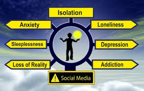

.jpg)
This page will talk about how soical media effects on mental health.
It can also increase the risk of substance abuse, risky behaviors, and even self-harm or suicide.
Mental health challenges can lead to difficulties with concentration, memory, and completing assignments, potentially resulting in lower grades, increased absences from school, and even dropping out.Students with mental health issues may find it harder to engage with schoolwork and may be more likely to fall behind or face disciplinary actions.
Mental health conditions can make it challenging for teens to navigate social situations, leading to withdrawal from friends and family, feelings of isolation, and difficulty forming and maintaining relationships.Teens may struggle with social anxiety, fear of judgment, and difficulty expressing themselves, impacting their ability to participate in social activities.
Mental health issues can disrupt sleep patterns, affect appetite, and lead to changes in energy levels.Teens with poor mental health may experience physical symptoms like headaches, stomachaches, and fatigue.Substance abuse can also be a coping mechanism for teens struggling with mental health problems.
Untreated mental health issues can have lasting effects on a teen's development, self-esteem, and overall quality of life.Mental health disorders in adolescence can increase the risk of developing other mental health issues or substance use disorders later in life.In severe cases, mental health problems can contribute to self-harm and suicidal thoughts and behaviors.
Many teens experience anxiety disorders, which can cause excessive worry, fear, and physical symptoms.
Depression can manifest as persistent sadness, loss of interest in activities, and changes in sleep or appetite.
These can include conditions like ADHD, oppositional defiant disorder, and conduct disorder, which can affect a teen's ability to follow rules, control their emotions, and interact appropriately with others.
These conditions, such as anorexia and bulimia, can have serious physical and psychological consequences.
Teens may turn to drugs or alcohol as a way to cope with mental health challenges, which can lead to addiction and further complications.
Overall, it's crucial to recognize that mental health is an integral part of overall health and well-being in teenagers. Early identification, support, and access to treatment are essential for helping teens navigate these challenges and thrive.
